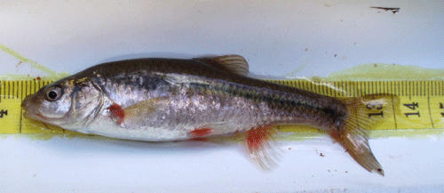
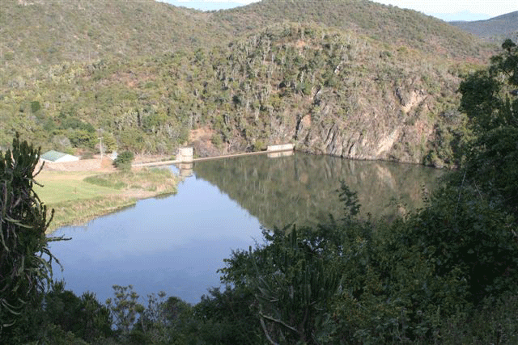

Fewer than 100 indigenous freshwater fish species occur in southern Africa; half of these are endemic and 28 of the endemic species have protective status (i.e., are listed in the South African Red Data Book). Recent work suggests that the conservation status of many of these species has declined since they were listed. The major threats to these fishes include habitat destruction through canalisation of rivers, the construction of dams and weirs, water abstraction from farming, deforestation and erosion, and the effects of introduced species.

At the conclusion of the workshop, participants will have the
opportunity to observe elements of this unique fish fauna during a day
long field excursion to
The
AENP has considerable freshwater resources, including 31 streams and
rivers. The Witte


We will depart Grahamstown Friday moring, Nov 21st for the drive to AENP. We will visit sites on the Witte River the morning, where we will check nets set in the reservoir by our hosts and sample the river below the dam. We are likely to encounter a variety of indigenous fishes, including native eels, gobies, and barbs. In the afternoon we will enjoy a game drive in the park. The trip will give delegates the opportunity to observe conservation and restoration work in action in AENP. The excursion will be led by Olaf Weyl of Rhodes University.
The Witte River is unpolluted and there is no Bilharzia nor malaria in the Eastern Cape. Our guide suggests wadding shoes, or walking shoes that can get wet, and shorts in case participants want to help collect. The weather can fluctuate as a result of cold fronts. Olaf suggests a change of clothes, light jacket, sunscreen, a hat and polarized sunglasses.
Please e-mail Hank Bart (hank@www.tubri.org/museum) and Olaf Weyl (o.weyl@ru.ac.za) to confirm your participation in this trip. Click here to return to main page